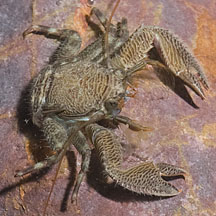
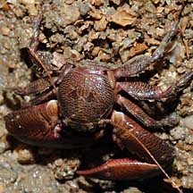
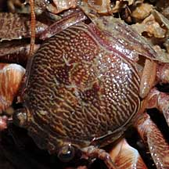

|
|
| porcelain crabs text index | photo index |
| Phylum Arthropoda > Subphylum Crustacea > Class Malacostraca > Order Decapoda > Anomurans > Family Porcellanidae |
| Big
porcelain crab Petrolisthes sp.* Family Porcellanidae updated Dec 2019 Where seen? This flat crab with large flat pincers is often seen on some of our rocky shores, hidden under stones. After having a look under a stone, be sure to replace the stone the way you found it. Do it carefully so you don't crush any living things. Features: It's larger and more colourful than most porcelain crabs found under stones. Body width 1-2cm. Body somewhat oval, not hairy. The pincers are much bigger than the body and have serrated edges. Antennae much longer than the body. The crab is reddish or maroon with a pattern of fine stripes. It may have spots of bright colour (orange, blue) near the tips of the pincers and around the face. |
|
 Lazarus Island, Aug 12  Feathery mouthparts. |
 Lazarus Island, Aug 12  Feathery mouthparts. |
 Three pairs of walking legs. Changi, Jun 08  Fourth pair of legs reduced and tucked up next to the body. |
*Species are difficult to positively identify without close examination.
On this website, they are grouped by external features for convenience of display.
| Big porcelain crabs on Singapore shores |
On wildsingapore
flickr
|
| Other sightings on Singapore shores |
|
Genus Petrolisthes recorded for Singapore from Wee Y.C. and Peter K. L. Ng. 1994. A First Look at Biodiversity in Singapore. *name updates from BiotaTaiwanica +from our observation in red are those listed among the threatened animals of Singapore from Ng, P. K. L. & Y. C. Wee, 1994. The Singapore Red Data Book: Threatened Plants and Animals of Singapore.
|
Links
|